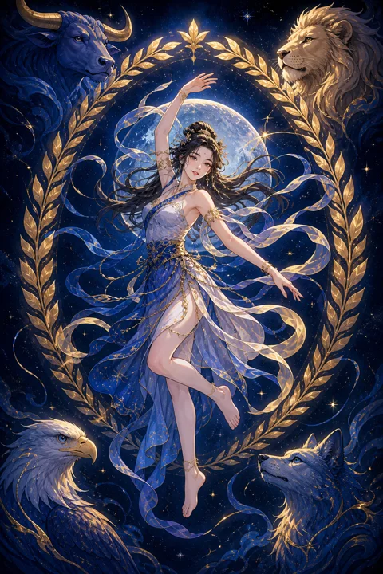

XXI 세계 카드 — 한 바퀴를 온전히 완주하는 때
세계 카드 한눈에 보기
세계 카드 상징 읽기

동네보살의 카드 그림은 전통 라이더–웨이트 덱의 뜻을 새 그림으로 옮긴 것입니다. 아래 상징 설명은 전통 덱의 그림을 기준으로 합니다.
그림 중앙에는 보랏빛 천을 두른 인물이 커다란 월계수 화환 안에서 한 발을 들고 춤추고 있습니다. 화환은 승리와 완성을, 끝과 시작이 이어진 둥근 형태는 한 주기가 온전히 닫히고 다시 열리는 순환을 뜻합니다.
인물의 양손에는 짧은 막대가 하나씩 들려 있습니다. 마법사 카드에서 하나였던 막대가 둘로 나뉘어 있어, 안과 밖, 받는 힘과 주는 힘이 조화를 이룬 상태로 해석됩니다.
화환 위아래를 묶은 붉은 리본은 무한의 고리를 닮았습니다. 네 귀퉁이에는 사람, 독수리, 사자, 황소의 머리가 보이는데, 이는 네 가지 원소와 고정궁 별자리를 상징하며 세상의 모든 요소가 균형 속에 하나로 모였다는 의미를 전합니다.
인물의 교차한 다리는 매달린 사람 카드의 자세를 뒤집은 모습으로, 시련을 통과한 뒤 얻은 자유와 균형을 상징합니다. 푸른 하늘을 배경으로 떠 있는 구도는 어느 한 곳에 묶이지 않고 세상 전체와 호흡하는 상태를 뜻합니다.
세계 카드 정방향 뜻
정방향 세계는 긴 여정의 끝에서 맞이하는 온전한 완성을 뜻합니다. 졸업, 계약 성사, 목표 달성, 오래 준비한 일의 마무리처럼 한 장이 깔끔하게 닫히는 장면이 떠오르는 카드입니다.
이 완성은 단순히 결과를 얻었다는 의미를 넘어섭니다. 그 과정에서 겪은 기쁨과 시행착오가 모두 하나의 이야기로 엮여, 지금의 나를 이루는 자산이 되었다는 뜻입니다. 그래서 세계 카드에는 성취감과 함께 깊은 안정감이 깃들어 있습니다.
끝은 곧 새로운 시작이기도 합니다. 여기까지 해낸 경험을 들고 더 넓은 무대로 나아갈 준비가 되었다는 신호이므로, 성과를 충분히 누린 뒤 다음 목표를 가볍게 그려보시길 권합니다. 먼 곳이나 다른 나라와 관련된 인연이 열리는 흐름으로도 읽힙니다. 이 시기의 기쁨을 가까운 사람들과 함께 나누어 보세요.
세계 카드 역방향 뜻
역방향 세계는 거의 다 왔는데 마지막 한 걸음이 남은 상태를 보여줍니다. 결과가 손에 잡힐 듯한데 서류 하나, 확인 절차 하나 때문에 마무리가 늦어지는 흐름이 대표적입니다.
이 카드는 실패를 말하지 않습니다. 오히려 거의 다 채워놓고 남은 조각을 대충 넘기려 하거나, 끝내는 것이 두려워 일부러 미루고 있지는 않은지 살펴보라고 권합니다. 완성 뒤의 허전함이나 다음 단계에 대한 부담이 무의식적으로 발걸음을 늦추기도 합니다.
지금 필요한 것은 새로운 일을 벌이는 것이 아니라 열어둔 일을 닫는 것입니다. 빠진 조각이 무엇인지 목록으로 정리하고 하나씩 채워 나가면, 미뤄졌던 완성의 순간은 생각보다 가까이 있습니다. 끝맺음의 순간을 두려워하지 않을 때 다음 여정도 한결 가벼워집니다.
연애에서 세계 카드
솔로라면 스스로에게 충분히 만족하는 상태에서 좋은 인연을 만날 가능성이 높아지는 시기입니다. 누군가로 빈자리를 채우려 하기보다 이미 온전한 사람으로서 관계를 원하게 되니, 만남의 질도 자연스럽게 달라집니다. 여행지나 새로운 환경, 멀리 사는 사람과의 인연도 이 카드와 잘 어울립니다.
연애 중이라면 관계가 하나의 결실을 맺는 흐름입니다. 결혼이나 함께 살 집을 구하는 일처럼 두 사람의 여정이 새 장으로 넘어가는 순간이 찾아올 수 있습니다. 오랜 시간 쌓아온 신뢰가 안정감으로 자리 잡으면서 서로를 있는 그대로 인정하게 됩니다. 이미 충분히 좋은 관계라면 그 사실을 서로에게 말로 확인해 주는 것만으로도 큰 힘이 됩니다. 둘만의 작은 기념 의식을 만들어 보는 것도 좋습니다.
재회·속마음 질문에서 세계 카드
재회 질문에서 세계는 조금 복합적으로 읽힙니다. 상대는 당신과의 시간을 자신의 성장에 의미 있었던 한 시절로 받아들이고, 감정적으로는 이미 정리를 마쳤을 가능성이 있습니다.
그래서 이 카드는 옛 관계를 되살리는 것보다 그 인연이 준 배움을 품고 새로운 여정으로 가라는 조언에 가깝습니다. 만약 다시 이어진다면 예전의 연장이 아니라 서로 완전히 달라진 사람으로서 새로 시작하는 형태일 때 가능성이 보입니다. 억지로 되돌리기보다 서로의 새 출발을 진심으로 응원하는 마음이 오히려 인연의 문을 열어 두는 방법이 되기도 합니다.
일·금전에서 세계 카드
일에서는 오랫동안 추진해 온 프로젝트가 완료되거나 목표한 성과를 달성하는 흐름입니다. 자격증 취득, 학위 마무리, 계약 체결처럼 매듭을 짓는 일에 특히 좋은 카드이며, 그 결과를 발판 삼아 더 큰 조직이나 새로운 시장으로 영역을 넓힐 기회가 열리기도 합니다.
지금은 성과를 정리해 기록으로 남겨두시기 좋은 때입니다. 포트폴리오나 경력 사항을 새로 정리해 두면 다음 무대로 옮길 때 든든한 근거가 됩니다. 금전 면에서는 한 주기의 수입과 지출을 결산하고 안정감을 느끼는 흐름이며, 다음 목표를 위한 계획을 차분히 세우기 좋은 시기입니다. 끝낸 일의 교훈을 짧게라도 문서로 남겨 두면 다음 도전에서 같은 시행착오를 줄일 수 있습니다.
세계 카드는 예일까 아니오일까
하나의 목표가 온전히 완성되는 카드라 정방향에서는 뚜렷한 예로 읽습니다. 역방향이면 답은 긍정에 가깝지만 마지막 준비가 덜 되어 시기가 조금 늦춰질 수 있습니다.
자주 묻는 질문
세계 카드 역방향은 나쁜 뜻인가요?
역방향 세계는 거의 다 왔는데 마지막 한 걸음이 남은 상태를 보여줍니다. 결과가 손에 잡힐 듯한데 서류 하나, 확인 절차 하나 때문에 마무리가 늦어지는 흐름이 대표적입니다.
세계 카드가 연애 질문에 나오면요?
솔로라면 스스로에게 충분히 만족하는 상태에서 좋은 인연을 만날 가능성이 높아지는 시기입니다. 누군가로 빈자리를 채우려 하기보다 이미 온전한 사람으로서 관계를 원하게 되니, 만남의 질도 자연스럽게 달라집니다. 여행지나 새로운 환경, 멀리 사는 사람과의 인연도 이 카드와 잘 어울립니다.
타로 카드는 어떻게 뽑나요?
타로 카드 페이지에서 카드를 섞으면 메이저 아르카나 22장이 펼쳐집니다. 마음이 가는 세 장을 고르면 과거·현재·미래 자리에 놓이고, 한 장씩 뒤집어 자리와 방향에 맞는 풀이를 읽습니다. 정방향과 역방향은 섞는 순간 정해집니다.